AI Switch — Institution Admin Guide
AI Switch is a governed access and consumption layer for AI models hosted on shared infrastructure. Your institution has been granted access by its owner — the Adopter — within limits they have defined. As Institution Admin, you manage how your institution uses that access.
This guide walks you through verifying your account, onboarding the applications that will consume services, creating API keys, and tracking usage and spend.
Plan & Prepare
Your role
This guide is for the Institution Admin — the person responsible for managing a single institution’s access to AI Switch. It does not cover platform-wide administration, which is carried out by the Adopter Admin.
Adopter Admin
Governs the whole platform: models, tiers, services, institutions, and budgets. They onboard your institution and assign the tier and budget within which you operate.
Institution Admin
That is you. Onboard applications, create and manage API keys, and monitor usage and spend against the assigned tier and budget.
Before you begin
Keep the following ready so setup runs without interruption:
- The activation email sent when your institution was onboarded — you will use it to set your password and sign in.
- The list of applications your institution will onboard, along with a contact for each.
- For each API key: its intended use, the permissions it needs, and when it should expire.
AI Switch concepts
| Term | Definition |
|---|---|
| Adopter | The organization that owns and governs the AI Switch deployment. |
| Institution | Your organization, granted access to the platform under the Adopter’s governance (also referred to as a tenant). |
| Application | A system your institution builds that consumes a service through an API key. |
| API Key | A credential issued to an application, used to authenticate its requests to a service. |
| Service | A model made available for consumption, together with its pricing and the tiers permitted to access it. |
| Tier | The set of usage limits (quotas) and rate limits, mapped to services and assigned to your institution. |
| Budget | The total spending allocation given to your institution for a defined period. |
| Quota | The maximum consumption permitted per month, defined per model task type inside your tier. |
| Rate Limit | The maximum rate at which requests may be submitted per hour. |
| Metering | The recording of your institution’s usage, tracked against your assigned tier and budget. |
| Monitoring | The ongoing tracking of your institution’s usage and spend against its assigned quota and budget. |
Onboard & Provision
1. Verify your account & set your password
| Objective | Activate your Institution Admin account from the onboarding email, set your password, and sign in. |
|---|---|
| Role | Institution Admin |
| Prerequisites | The Adopter Admin has onboarded your institution, and an activation email has been sent to your address. |
-
Open the activation email and click Set your password.
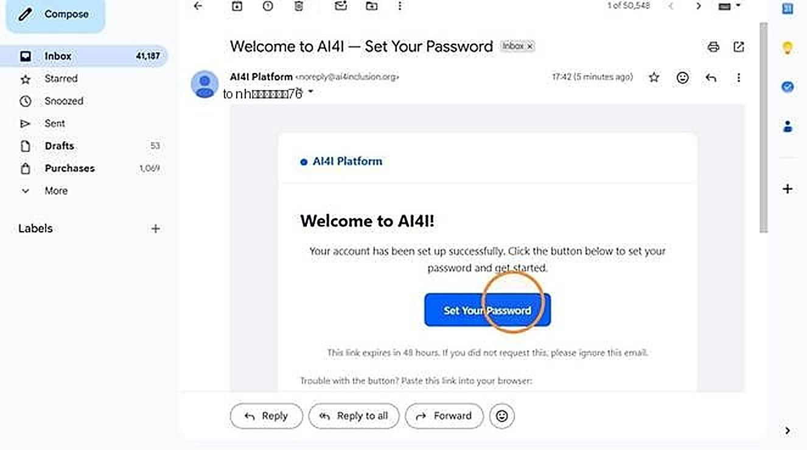
The account verification email Note If the activation email does not arrive within a few minutes, check spam, then contact your Adopter Admin — they can activate your account through an alternate method. -
Enter and confirm your password, then click Set Password. All
requirements must be met before the button is enabled.
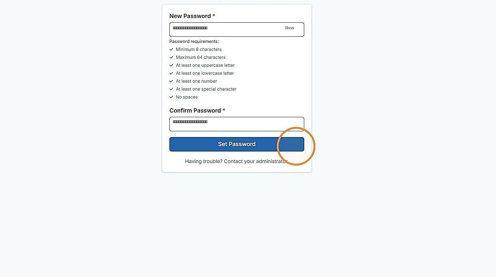
Entering and confirming your password, with all requirements met -
Once the password is set, click Go to sign in.
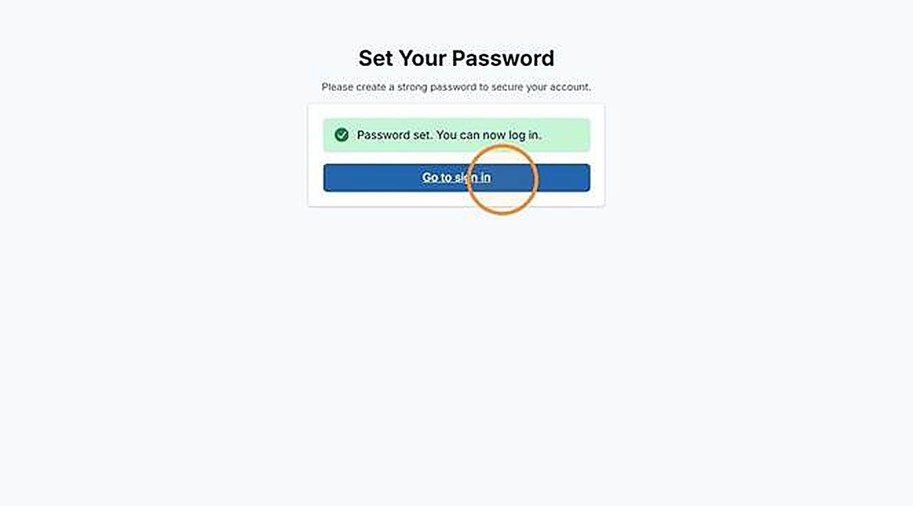
Password set successfully -
A welcome email with your account details is sent to you.
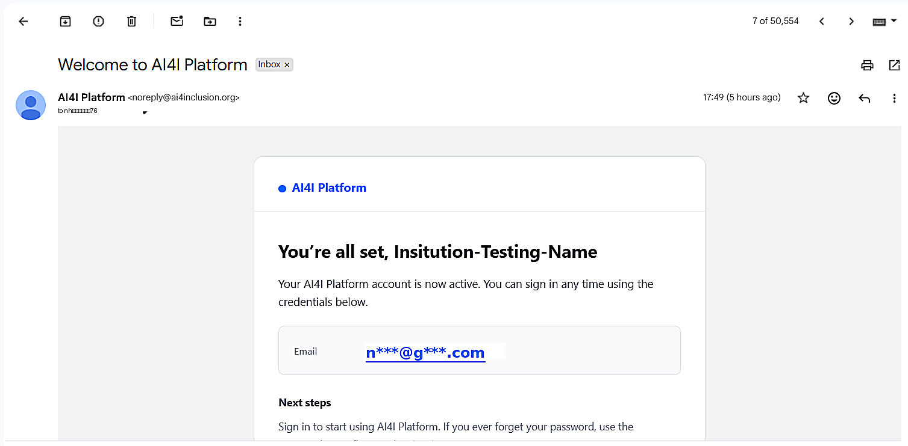
The welcome email confirming your account -
Sign in with your credentials.
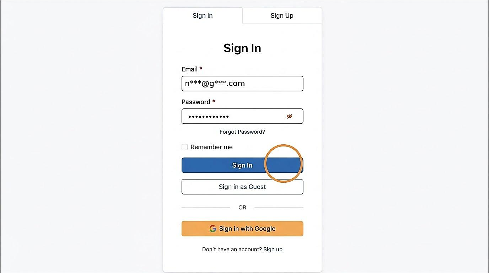
Signing in for the first time
2. Onboard an application
| Objective | Register an application that will consume services on behalf of your institution. |
|---|---|
| Role | Institution Admin |
| Prerequisites | Your account is active and you are signed in; you have the contact details of the person the application will be registered under. |
-
Open Institution Management.
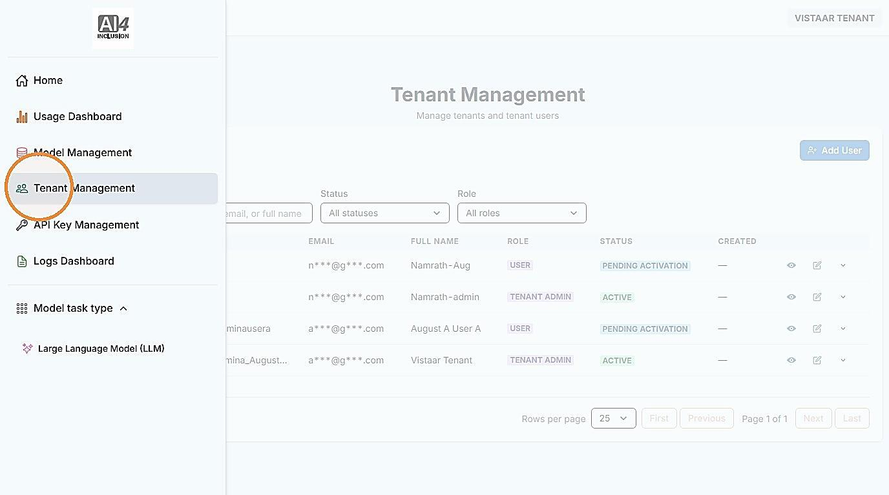
The Institution Management area -
Click Add User to register a new application.
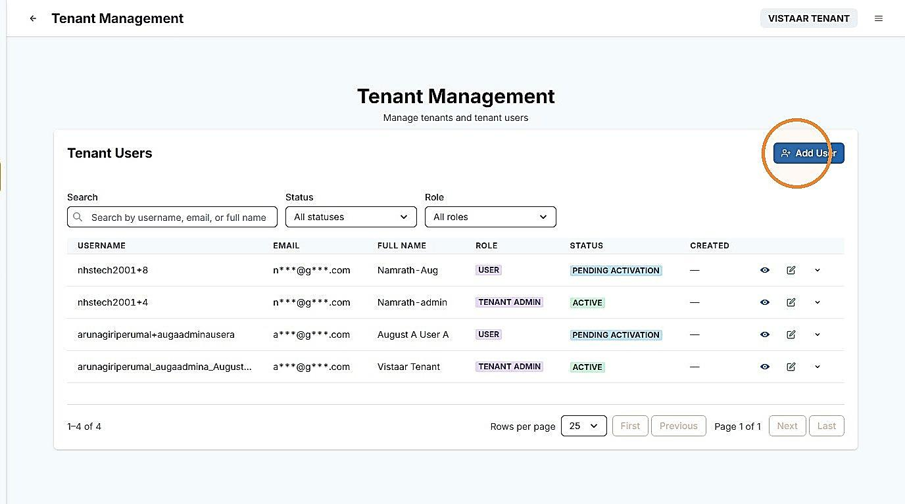
Existing users in Institution Management 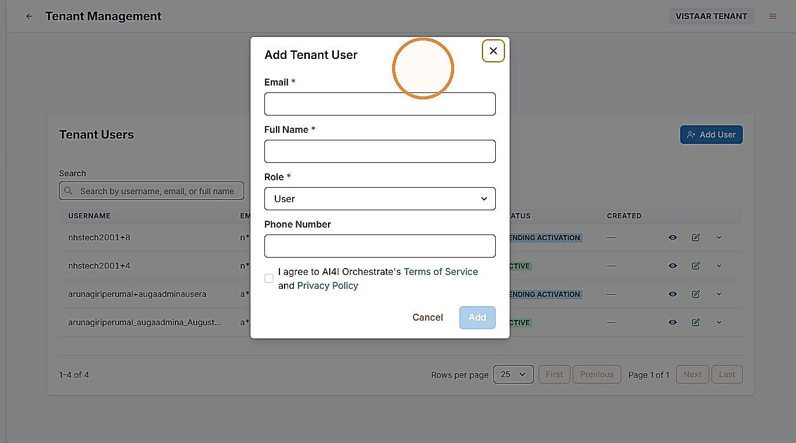
Opening the registration form -
Enter Email, Full Name, Role, and Phone Number, agree to the policies, and click Add.
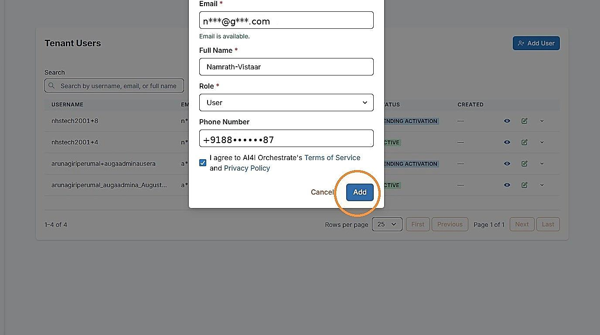
Entering the application’s details, accepting the policies, and clicking Add -
The new entry appears as Pending activation until the application’s
contact verifies email and sets a password.
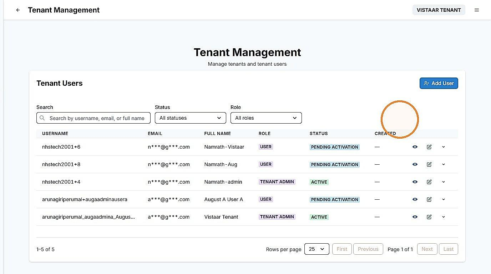
The new entry, shown as pending activation
3. Create an API key
| Objective | Create the API key an application uses to authenticate its requests to a service. |
|---|---|
| Role | Institution Admin |
| Prerequisites | Your institution has an active tier and budget assigned; you know the permissions and expiry the key requires. |
-
Open API Key Management. The Create API Key tab opens by default.
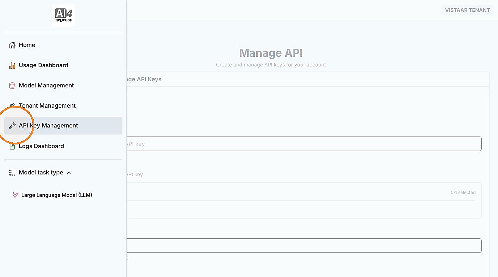
The API Key Management area 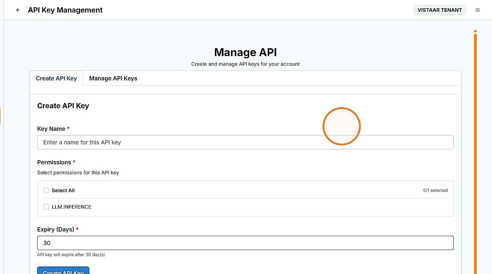
The Create API Key tab, ready for a new key -
Enter Key Name, Permissions, and Expiry, then click Create API Key.
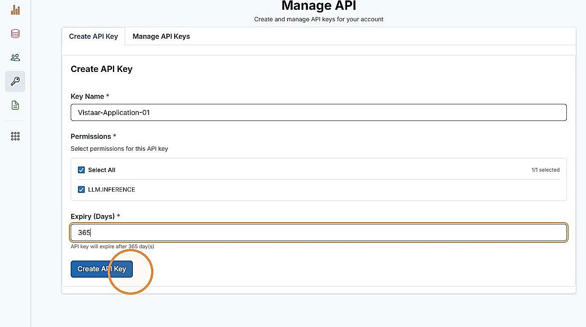
Entering the key name, permissions, and expiry Note An API key can be created only if your institution has an active tier assigned. If no tier is assigned, contact your Adopter Admin. -
Copy the key immediately and store it securely — it is shown only once.
Important The full API key cannot be retrieved again after creation. If it is lost, create a new key.
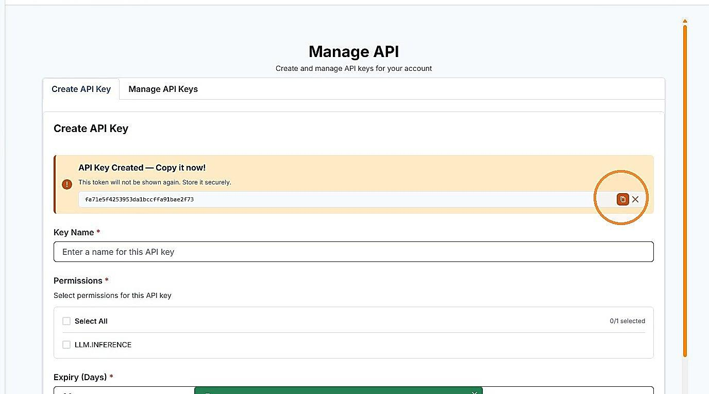
The API key created, shown once with the option to copy it
Operate & Govern
Reports & insights — Usage Dashboard
| Objective | View your institution’s usage and spend against its assigned tier and budget, broken down by service and by model. |
|---|---|
| Role | Institution Admin |
| Prerequisites | At least one application in your institution is consuming a service using an API key. |
-
Open Usage Dashboard from the left navigation.
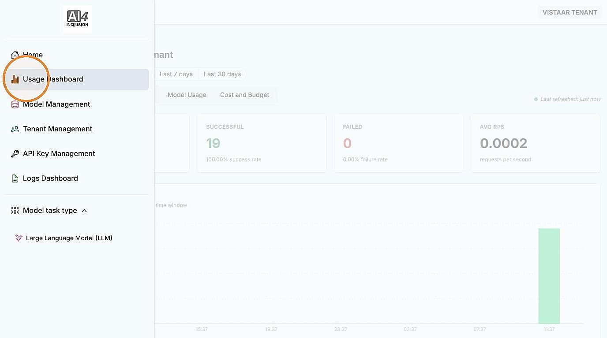
Opening the Usage Dashboard -
Use Overview for total requests, success and failure counts, and request volume over time.
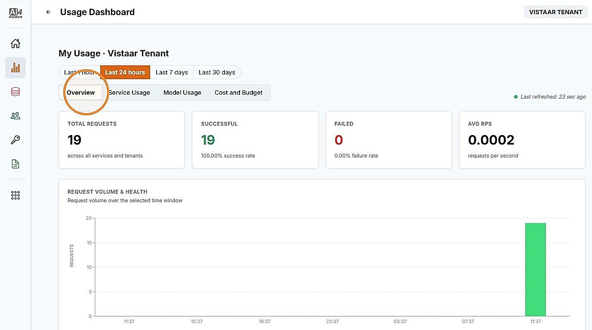
The Overview tab -
Use Model Usage to view usage broken down by model.
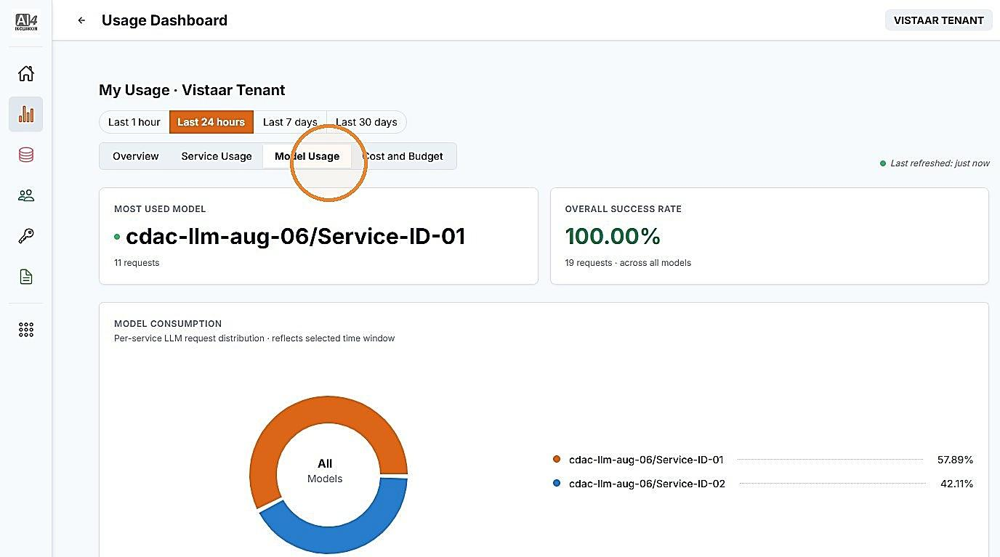
The Model Usage tab -
Use Cost and Budget to view spend against the assigned tier and budget.
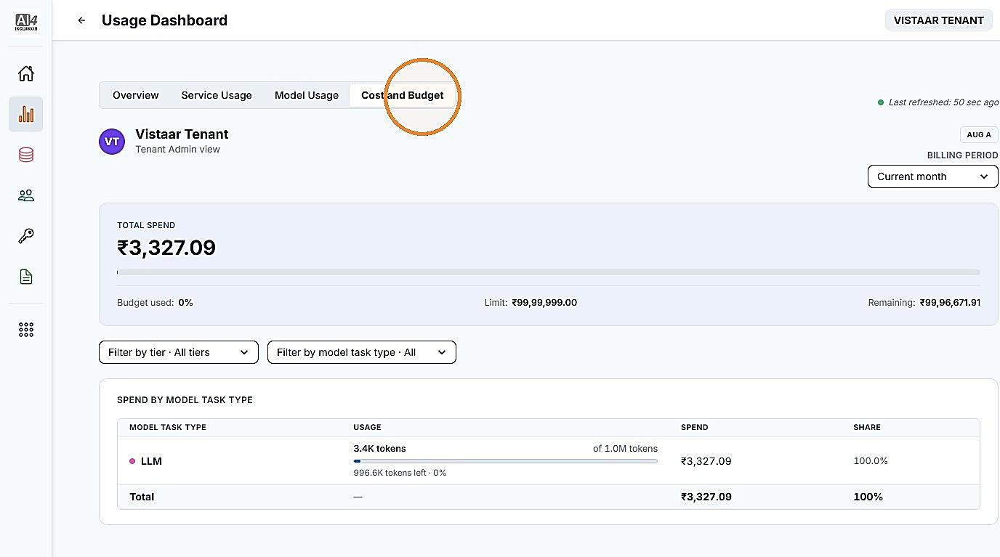
The Cost and Budget view for your institution